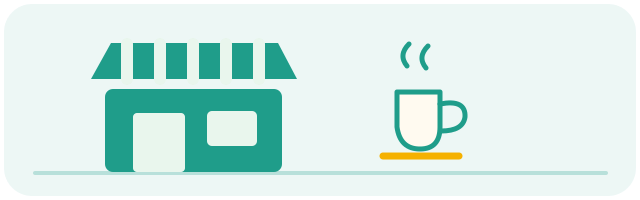
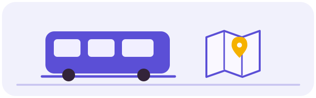
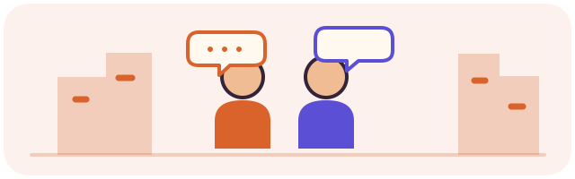
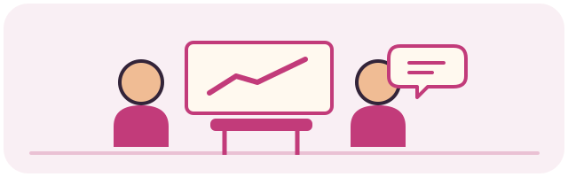

Ema · Kalbėk!
Septynios tos pačios mokytojos būsenos. Įjungus sistemos „Sumažinti judėjimą“, animacijos sustoja.
Lygių iliustracijos




Ikona
Garso efektai
Iliustracijos ir garsai paruošti; esamoje programėlėje dar neprijungti. Ema ir ikona įkeliamos automatiškai.
Atverti programėlę